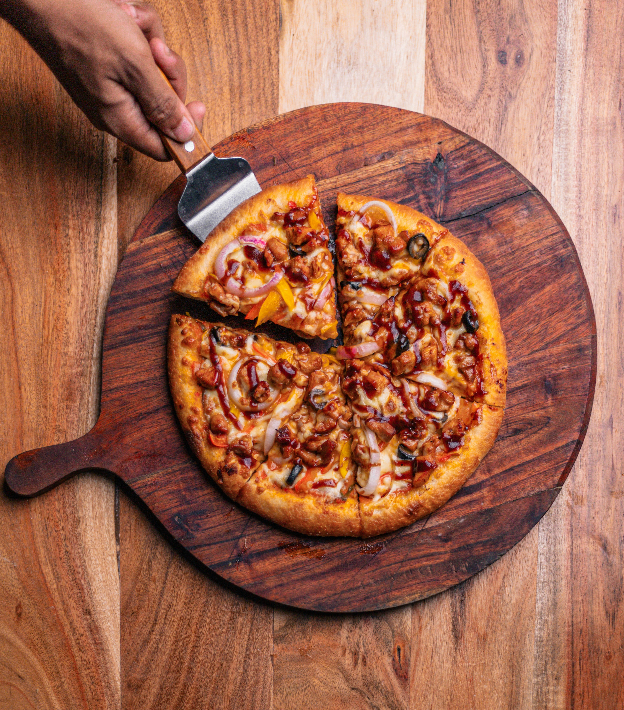

Home
BBQ Chicken Pizza

Description
Making your own BBQ chicken pizza at home is not only easy, but it’s way cheaper than ordering takeout. Plus, you get to customize it just the way you like. If I’m short on time, I use rotisserie chicken, which I chop up and mix with the BBQ sauce. You could even use canned chicken! If I don’t have chicken on hand, black beans make a great budget-friendly swap (mixed with the spices and sauce listed for the chicken). However you top it, homemade always wins.
Ingredients
Quick BBQ Chicken*
- ½ tsp smoked paprika
- ¼ tsp garlic powder
- ⅛ tsp salt
- ⅛ tsp black pepper (freshly cracked)
- 1 chicken breast (boneless, skinless (about ⅔ lb.))
- ½ Tbsp cooking oil
- ¼ cup BBQ sauce
Pizza
- 1 pizza dough
- 4 oz. Monterey jack cheese (shredded)
- ½ cup BBQ sauce
- 1 jalapeño (sliced, (optional))
- ¼ cup red onion (sliced)
Steps
- In a small bowl, combine the smoked paprika, garlic powder, salt, and pepper. Season both sides of the chicken breast with the spices.
- Heat a skillet over medium. Add the cooking oil and swirl to coat the surface of the skillet. Add the seasoned chicken breast and cook for about 5-7 minutes on each side, or until cooked through (internal temperature of 165ºF). Transfer the chicken to a clean cutting board.
- Let the chicken rest for about 5 minutes, then chop into small pieces. Add ¼ cup BBQ sauce to the chopped chicken, and stir to coat the chicken in the sauce.
- Preheat the oven to 450ºF. Place the prepared pizza dough or crust on a pizza pan, then spread about ½ cup BBQ sauce over the surface.
- Add the cheese, BBQ chicken, sliced jalapeños, and sliced onion to the pizza.
- Bake the pizza for 10-12 minutes, or until the crust and cheese are golden brown. Slice into 8 pieces and serve.